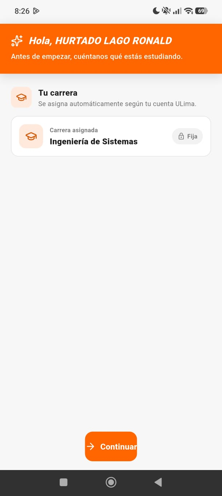

Malla curricular
Revisa tu avance académico y los cursos que forman parte de tu plan de estudios.
Universidad de Lima
ULima++ reúne en un solo lugar herramientas útiles para estudiantes de la Universidad de Lima: malla curricular, horario, simulador de notas, asesorías, anuncios y contactos por curso.
Por ahora, la aplicación está disponible para Android mediante APK. La versión para iOS se considera para una siguiente etapa del proyecto.

Revisa tu avance académico y los cursos que forman parte de tu plan de estudios.
Accede a tus clases, asesorías, anuncios y contactos según la sección matriculada.
Registra tus evaluaciones y calcula tu promedio de manera rápida durante el ciclo.